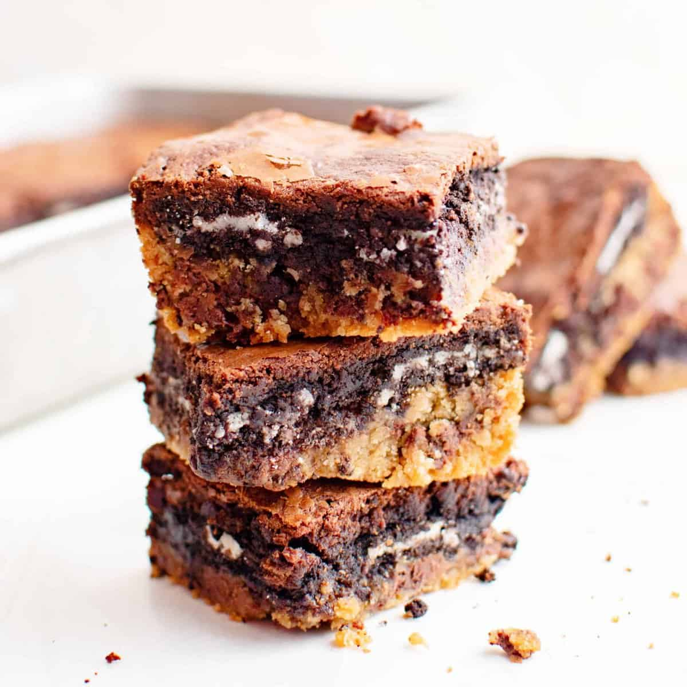

Slutty Brownies

Description
This dessert will become your all-time favorite after trying this recipe. The different
layers of this dessert not only add size to your dessert but they also add a delicious mix of flavor.
Travelling from cookie, to oreo, to brownie is quite the flavor adventure that is waiting to be explored
by you.
Ingredients
- Brownie mix
- Cookie dough
- Oreos
- Egg
- Vegetable oil
Steps
- Mix brownie mix with desired eggs, vegetable oil, and water to create brownie batter
- Line the bottom of pan with cookie dough
- Place a oreos on top of cookie dough in a grid-like pattern
- Pour the brownie batter into the pan covering the oreos and cookie dough
- Bake at 350o F for 35-45 minutes (place toothpick in the center to make sure the brownies are done)
- let cool for 10 minutes before slicing